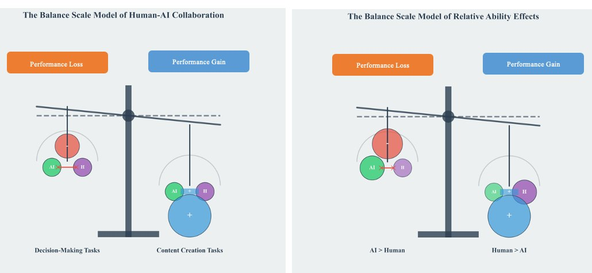
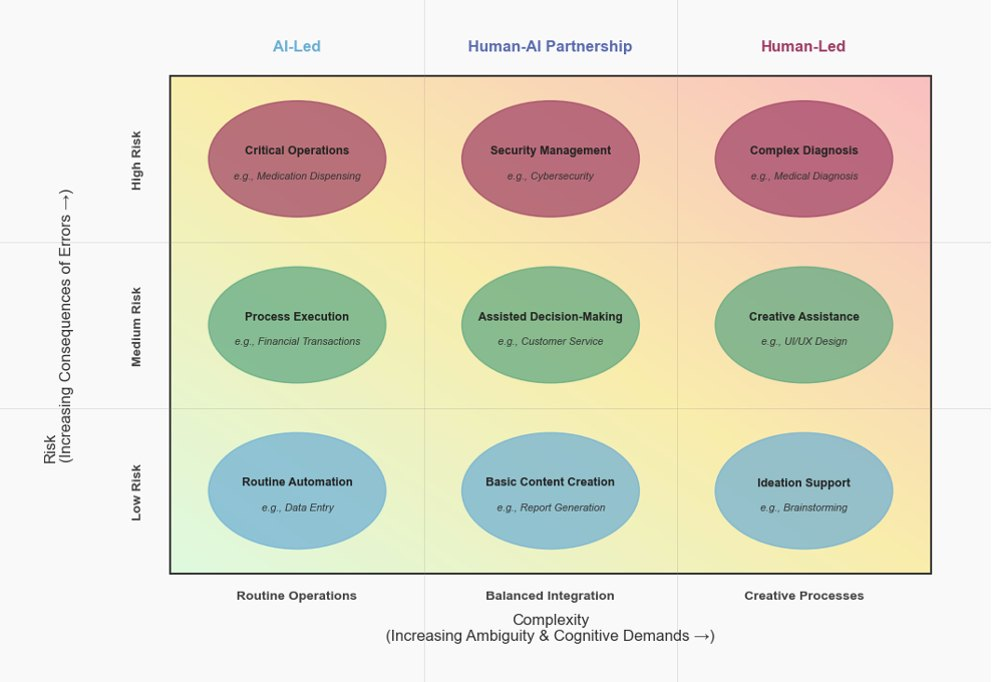
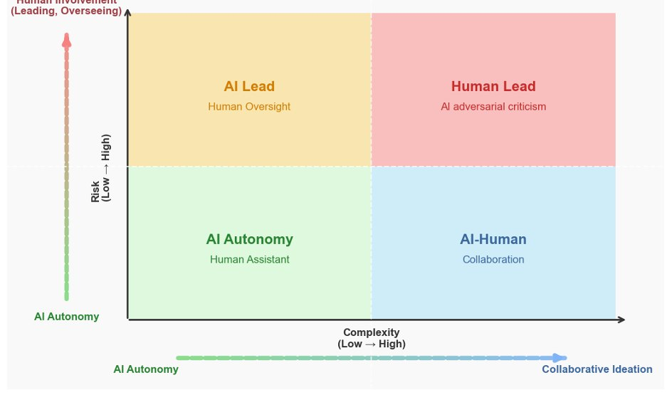
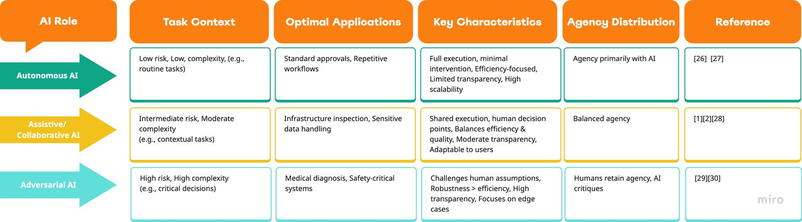
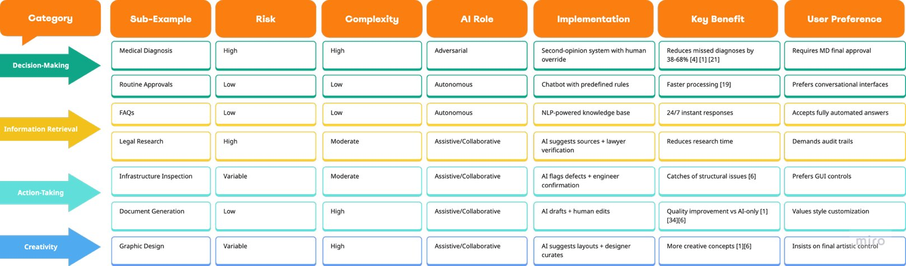
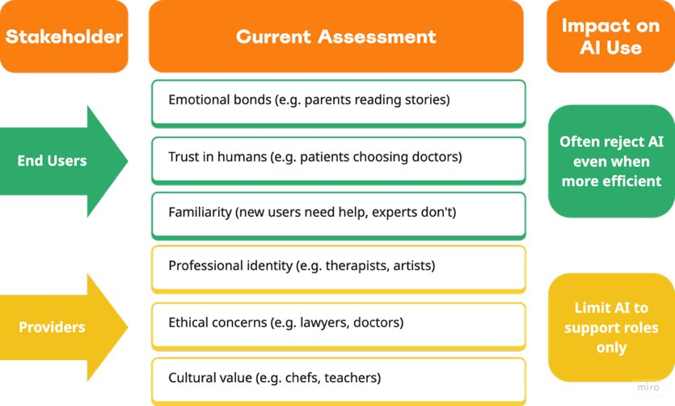

38–68%fewer missed diagnoses with AI as a second opinion (cited study)
Overview
Human–AI teams often fail to reach real synergy. A meta-analysis of 106 experiments found that human–AI combinations perform, on average, worse than the best of humans or AI alone. This paper reverses the usual starting point: instead of asking what a technology can do, it analyzes the task, along dimensions of risk and complexity, and assigns AI one of three roles accordingly: autonomous, assistive/collaborative or adversarial. The result is structured guidance for automation that complements human judgment rather than replacing it.
Highlights
Collaboration hurts decision tasks on average (g = −0.27) but helps creation tasks, so the task, not the tool, should decide the AI’s role.
When humans outperform AI, teaming helps (g = 0.46); when AI outperforms humans, it hurts (g = −0.54).
In high-risk, high-complexity work, AI should challenge human assumptions, for example as a second opinion in diagnosis or an anomaly flagger in audits.
Routine, low-risk tasks can be safely automated, while high-risk routine tasks still need strict human oversight.
Framework

Fig. 1: the balance-scale model. Task type (decision vs. creation) and relative ability (AI > human vs. human > AI) tip human–AI teams toward performance loss or gain.

Fig. 2: task characteristics matrix. Leadership shifts from AI-led to human-led as complexity rises, and oversight increases with risk.

Fig. 3: risk vs. complexity zones: AI autonomy, AI–human collaboration, AI lead with human oversight, and human lead with AI critique.

Table 2: the three AI roles with task context, optimal applications, key characteristics and agency distribution.

Table 3: framework applications by task category, from medical diagnosis to graphic design.

Table 1: stakeholder factors that shape AI preference for end users and providers.
How it works
Classify each task by risk (low, intermediate, high) and complexity (low, moderate, high).
Account for stakeholder preferences and task type (decision vs. creation).
Match the task profile to an AI role, preserving meaningful human agency.
Ground each mapping in current empirical findings on human–AI team performance.
Afroogh, S., Varshney, K. R., & D’Cruz, J. (2025). A task-driven human-AI collaboration: When to automate, when to collaborate, when to challenge. arXiv preprint arXiv:2505.18422.